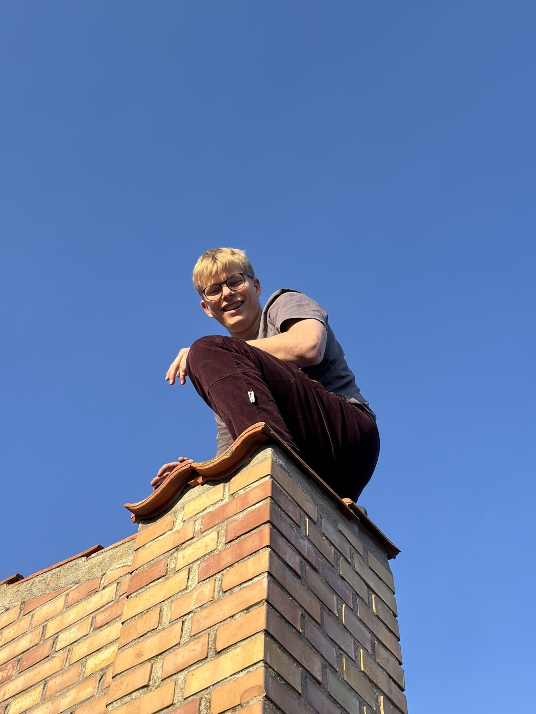

Vores idé
Friluftsliv skal føles tilgængeligt.
Vi samler grej, rutehjælp og praktisk rådgivning, så flere kan tage afsted med overskud. Naturen må gerne føles stor, men starten skal være enkel.
Bag RavnSpor
RavnSpor er skabt til mennesker, der gerne vil ud, men som ikke gider drukne i planlægning, udstyrslister og usikre ruter.
Vores idé
Vi samler grej, rutehjælp og praktisk rådgivning, så flere kan tage afsted med overskud. Naturen må gerne føles stor, men starten skal være enkel.
Vores stil
Navnet RavnSpor peger mod ravnen som vejviser og mod de spor, man følger gennem skov, fjord, hede og kyst.

Stifteren
Ideen kommer fra glæden ved at finde nye spor, pakke enkelt og gøre turen overskuelig for andre. RavnSpor handler om at gøre eventyr mere tilgængelige uden at fjerne følelsen af frihed.
Gode ruter, realistiske valg og udstyr, der passer til formålet.
Vi tænker i skånsomme ture, gode vaner og steder, der kan holde til besøg.
Det skal være nemt at komme afsted, uden at oplevelsen mister sin kant.